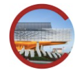

Professional Experiences

As a machine learning research assistant at the
Cornell Computer Systems Laboratory , I am advised by Professor Zhiru Zhang on a research project,
which aims to deploy and optimize binary neural networks on an Associative
Processing Unit (APU). I have developed developed the ReLu layer for the binary neural network, which aims to process and filter
large matrices of information using the GVML library.

As a Summer 2022 software engineer intern at
Interactive Brokers , I ennhanced the tool that the Risk Team uses to approve or reject margin changes for a particular stock to reduce room for error and time required to review margin changes.
I also developed a stand-alone Python script, which interprets margin-rates related data from a CSV file and updates the appropriate relational database with this information.

I'm a member of the course staff for CS 2110: Object-Oriented Programming and Data Structures
under Professor Michael Clarkson and Professor Curran Muhlberger for the Spring 2023 Semester.
I've worked on the course staff for CS 1110: Introduction to Computing using Python for the Fall 2022 Semester
under Professor Walker White and PhD student Dietrich Geisler. I'm responsible for helping 700+ students with concepts such as OOP, Data Structures, Sorting/Searching Algorithms, Polymorphism, and more!